ETL & Power Query
Extract
The raw data had 41 columns with redundancy present. Certain columns represented roughly the same thing and were not needed for analysis.
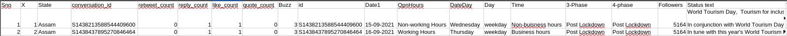
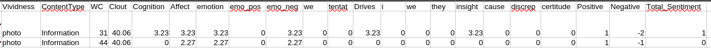
Transform
Data Cleaning
Dropped Columns
The Sno and X columns are roughly the same thing. Sno handled a continuous count throughout the whole dataset while X reset to 1 every time the State changed. Moreover, they are not needed thus they were dropped from the dataset.
The conversation_id and id field are pretty much the same values and are not needed thus they are dropped. The Status text field is dropped since sentiment analysis has already been performed on it and hence has become obsolete.
The 3-Phase and 4-Phase columns represent roughly the same concepts with 4-Phase encompassing more categorical splitting of time. Hence, only one is needed and the more descriptive one (4-Phase) is retained.
The columns Time and OpnHrs are the same values in practice hence since OpnHrs is a better descriptor it is the one that is retained. The Linguistic Inquiry and Word Count (LWIC) columns except Positive, Negative, Total_Sentiment, and WC are dropped since they offer no explaining power for business problems. They are used as intermediate columns to compute the positive, negative, and total sentiments from a piece of content.
Renamed Columns
The Date1 column is renamed to Date and DateDay to Day. The Day column is renamed to Day_Type. The column OpnHrs is renamed to Open_Hours to align with good grammar. The Followers column is renamed to Number_Of_Followers for increased clarity. The Vividness column is renamed to Post_Type for it to be a lot more functional- since it holds the different media types a post can be. The WC column is expanded to Word_Count.
While renaming the columns the snake and camel cases were merged thus following the pattern capitalizing the first letter and inserting an underscore between words (Retweet_Count for example).
Computed Columns
Using the Number_Of_Followers column the Influencer_Status column was created. The following bands were employed.
- <= 10,000 → Nano Influencer
- <= 100,000 → Micro Influencer
- <= 1,000,000 → Macro Influencer
- > 1,000,000 → Celebrity
From these bands, in our entire dataset the Celebrity status was the third highest one. And the Nano Influencer status was the least had the lowest representation.
Using the Word Count column the Verbosity column was created with the following categories.
- <= 20 → Low
- <= 60 → Medium
- <= 120 → High
- > 120 → Extreme
The Medium band holds the largest number of posts.
Remapped Columns
The State and Open_Hours columns had inconsistent naming and abbreviation of values thus they were remapped.
For State the map was:
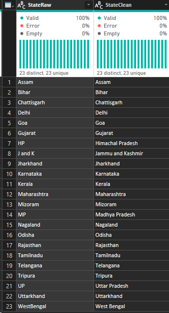
And for Open_Hours:
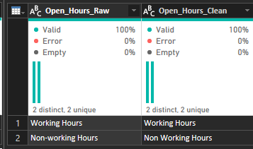
Data Type Conversion
| Column Name | Data Type |
|---|---|
| State | Text |
| Retweet_Count | Whole Number |
| Reply_Count | Whole Number |
| Like_Count | Whole Number |
| Quote_Count | Whole Number |
| Engagement | Whole Number |
| Date | Date |
| Open_Hours | Text |
| Day | Text |
| Day_Type | Text |
| 4_Phase | Text |
| Number_Of_Followers | Whole Number |
| Post_Type | Text |
| Content_Type | Text |
| Word_Count | Whole Number |
| Positive_Sentiment | Whole Number |
| Negative_Sentiment | Whole Number |
| Total_Sentiment | Whole Number |
| Influencer_Status | Text |
| Verbosity | Text |
Load
Power Query
Fact Table Social Media Engagement
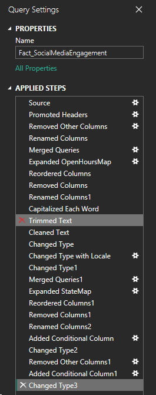
Dimension Table State
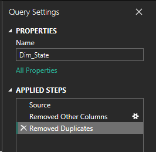
Dimension Table Post Type
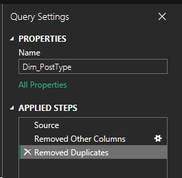
Dimension Table Content Type
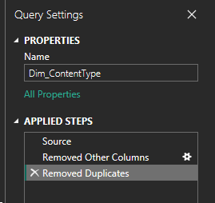
Dimension Table Phase
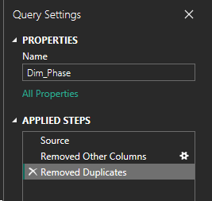
Dimension Table Open Hours
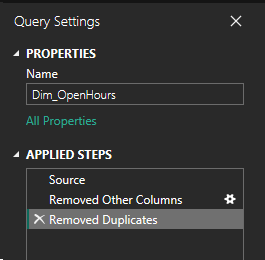
Dimension Table Date
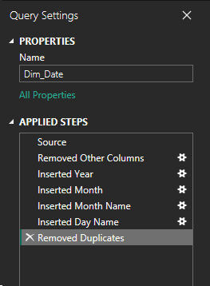
Dimension Table Day Power Query
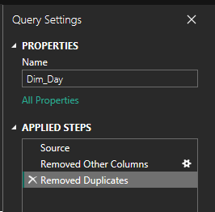
Dimension Table Day Type
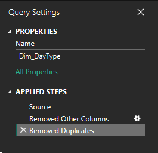
Dimension Table Influencer Status
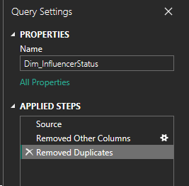
Dimension Table Verbosity
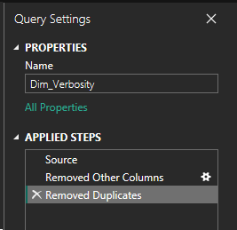